参考文献リストの書き方
レポートの末尾には、参考文献リスト（参考文献の一覧表）を付けるべきである。
ただし、学問分野によっては、参考文献を注釈（脚注）に掲げて、参考文献リストを省略する場合もある。参考文献リストを不要とするルールがある場合を除き、できるだけ参考文献リストを付けるべきである。
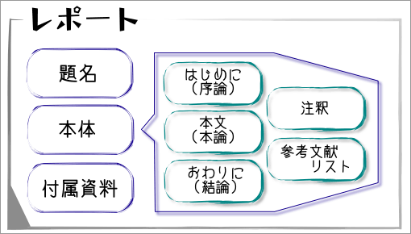
参考文献リスト（参考文献の一覧表）には、レポートを書くときに参考にしたり引用した文献・資料をすべて書かなければならない。
参考文献の利用実態
参考文献リスト（参考文献の一覧表）で大切なことは、参考文献リスト（参考文献の一覧表）に掲載した参考文献の利用実態が明らかであることである。参考文献の利用実態は、レポート本文（または、注釈）の中に明示されていなければならない。
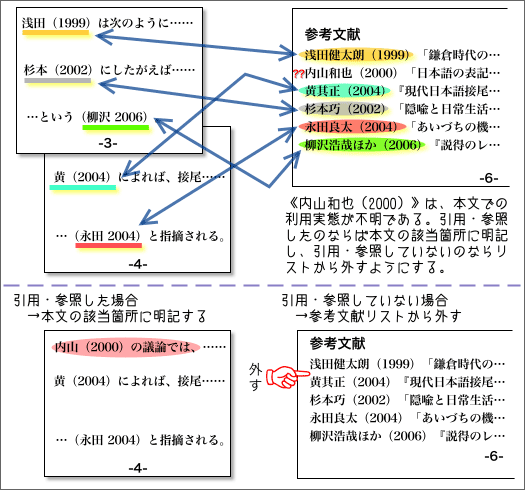
日本語の論文や報告では、本文の記述に利用したものだけを参考文献リストに掲載するのが基本である。
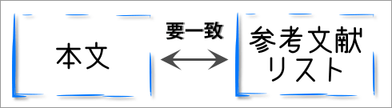
ただし、学問分野によっては、異なる書き方をする場合がある。たとえば、論文には直接利用していなくても、論文のテーマに関連する文献の長大なリストを資料として掲載する慣習がある場合もある。
レポートを作成する前の調査や勉強で読んだ文献であっても、レポートを書く際に引用・参照していないものは参考文献リストに掲載する必要はない。
参考文献リストの書式
参考文献リストには、配列などについて一定の書式がある。以下に、参考文献リストの書式について説明する。
なお、ひとつひとつの参考文献の書き方については【→参考文献の書き方】を参照せよ。
参考文献リストの配列
アイウエオ順
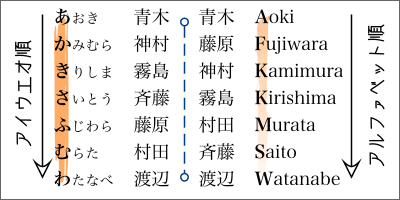
参考文献リストは、著者名のアイウエオ順に並べるのが一般的である。著者名をアルファベット順に並べる方法もあるが、あまり一般的ではない。
なお、著者名のない参考文献はリストの最後に並べるようにする。
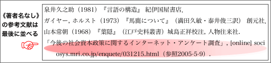
通し番号
参考文献リストでは、1、2、3...のように通し番号を付ける必要はない。
なお、理系の論文では、本文での出現順で並べ、[1][2][3]...のように通し番号を付ける場合もある。このとき、本文内での参考文献の指示は、参考文献リストの通し番号で行なう。たとえば、下図の例では、参考文献を本文中で（山田 1999）や（大山 2004）のようにではなく[1]や[2]と番号で示している。
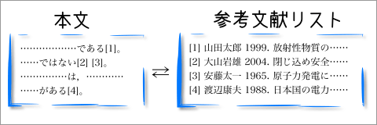
参考文献リストに通し番号を使う例（主に理科系の論文）
文科系の一般的な論文では、参考文献リストでは、通し番号を付けずに、そのまま並べればよい。
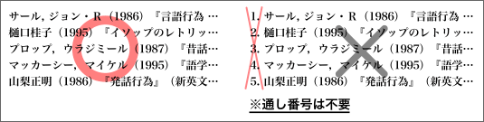
種類の区別
参考文献リストでは、書籍、論文、ウェブページなどの種類を区別して並べる必要はない（文科系の論文では、書籍名を二重カギカッコ（『』）でくくり、論文名をカギカッコ（「」）でくくるなど、表記によって種類を区別する慣例があるため、区別して並べることに特別な意味はないからである）。すべての参考文献をアイウエオ順に並べればよい。
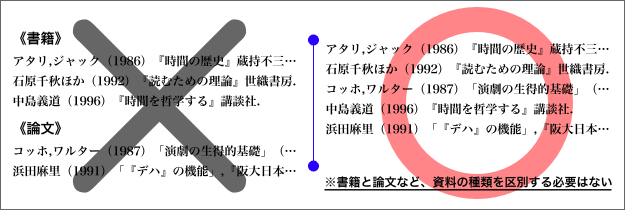
ただし、参考文献リストが特に長くなるなど、種類を区別した方が見やすいときには、種類を区別することもある。
また、理科系の論文では、書籍名や論文名などをカギカッコでくくらない書き方を標準とすることがあるため、書籍や論文などの種類を区別して並べることがある。
参考：理科系の論文での参考文献の書き方の例
細田壮一：オープンアーキテクチャのクライアント環境. 工業図書出版，広島，1990.
村上寛之 1970. サービス指向アーキテクチャー(SOA)の開発. ソフトウェア研究 52：120-125.
外国語の文献
欧文（アルファベットで書かれたもの）の参考文献は、アイウエオ順に並べることができない。欧文の参考文献が含まれる場合は、和文（日本語で書かれたもの）の参考文献と区別してアルファベット順に並べることになる。ただし、日本語の参考文献をアルファベット順に並べる場合は、和文の参考文献と欧文の参考文献とを一緒に並べることになる。
欧文の参考文献は和文の参考文献の後ろに続けることが多い。なお、「和文」「欧文」や「和書」「洋書」などの見出しは不要である。
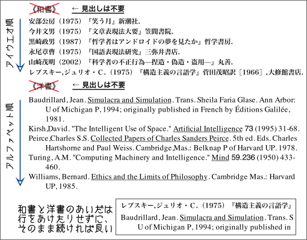
著者名が漢字で表記されている中国語の文献は、アイウエオ順に並べることができる。そのため、参考文献リストでは、著者名の漢字を日本語読みにして、和文の参考文献と一緒に並べればよいだろう。
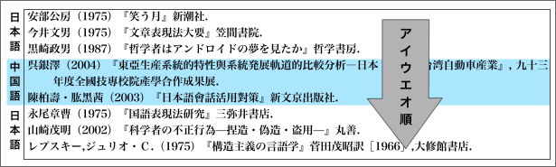
和文の参考文献と区別したいのならば、欧文の参考文献と同じように和文の参考文献の後ろに続けて並べてもよいが、その場合も「日本語文献」「中国語文献」や「日文」「中文」などの見出しをつける必要はない。
同じ著者名の文献
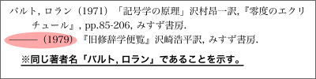
同じ著者名の文献が続くときは、２回目以降の著者名を省略して「———」（全角ダッシュを３つ続ける）と書けばよい。
同じ著者名の文献は、年代順に並べるのが基本である。
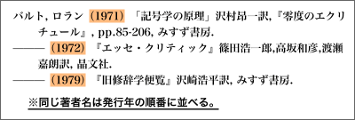
同じ著者名で発行年も同じものがあるときには、「1979a」、「1979b」、「1979c」のようにアルファベットをつけて区別する。なお、書籍→論文の順番で並べ、それぞれ本文での出現順にすることが多い。
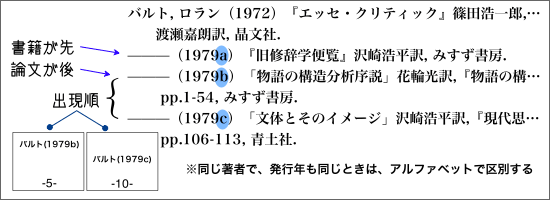
参考文献リストの具体例
参考文献リストは、次のように書けばよいだろう。
参考文献
- 赤間信幸（2006）『Microsoft Visual Studio 2005 によるWebアプリケーション構築技法—ASP.NET 2.0上での参照系・更新系アプリケーションの設計』日経BPソフトプレス.
- 石原千秋ほか（1992）『読むための理論』世織書房.
- 泉井久之助（1981）『言語の構造』 紀伊国屋書店．
- 内山和也（発行年不明）「日本人の依頼行為における順序構造について」, [online]homepage3.nifty.com/recipe_okiba/nifongo/irai.html（参照2007-1-1）.
- ガイヤー, ホルスト（1973）『馬鹿について』（満田久敏・泰井俊三訳） 創元社．
- キャンベル, ジョーゼフ（1997）『ジョーゼフ・キャンベルが言うには、愛ある結婚は冒険である。—ジョーゼフ・キャンベル対話集』（馬場悠子訳）築地書館．
- シービオク,Ｔ.Ａ.（1985）『自然と文化の記号論』池上嘉彦編, 勁草書房.
- 日本経済新聞「外国人活用を人材各社支援」2005年10月19日付朝刊, 14(7).
- 日本版救急蘇生ガイドライン策定小委員会編著（2006）『救急蘇生法の指針 市民用・解説編』日本救急医療財団心肺蘇生法委員会監修, へるす出版.
- バルト, ロラン（1971）「記号学の原理」沢村昂一訳,『零度のエクリチュール』, pp.85-206, みすず書房.
- ———（1979a）『旧修辞学便覧』沢崎浩平訳, みすず書房.
- ———（1979b）「物語の構造分析序説」花輪光訳,『物語の構造分析』pp.1-54, みすず書房.
- ———（1979c）「文体とそのイメージ」沢崎浩平訳,『現代思想』7(4), pp.106-113, 青土社.
- ヤコブソン, ロマーン（1973）『一般言語学』川本茂雄監修, 田村すず子ほか訳, みすず書房.
- 山本常朝（1968）『葉隠』（江戸史料叢書）城島正祥校注, 人物往来社.
- 「アルビレックス新潟：決めるべき男、目覚める」,『週刊サッカーマガジン』2006年９月５日号, p.54, ベースボールマガジン社.
- 「今後の社会資本政策に関するインターネット・アンケート調査」, <http://sociosys.mri.co.jp/enquete/031215.html> 2005年５月９日アクセス.
- "はじめてのウェブログ [weblog for beginners]", <http://kotonoha.main.jp/weblog/> 2006年６月29日アクセス.